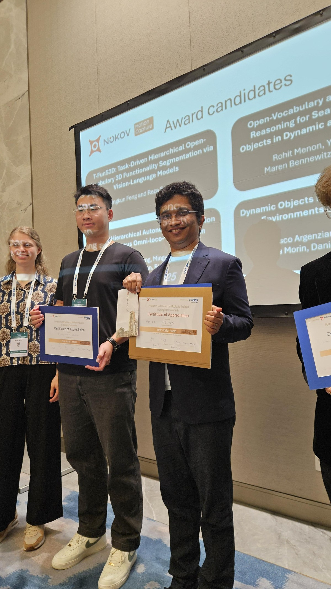

20 October 2025 · HangzhouIROS workshop Best Poster Award
Received the Best Poster Award at the workshop on Perception and Planning for Mobile Manipulation in Changing Environments for work on open-vocabulary semantic search in scene graphs. This workshop paper is a distinct precursor to O-STaR.
Award announcementPhoto: Humanoid Robots Lab, University of Bonn.